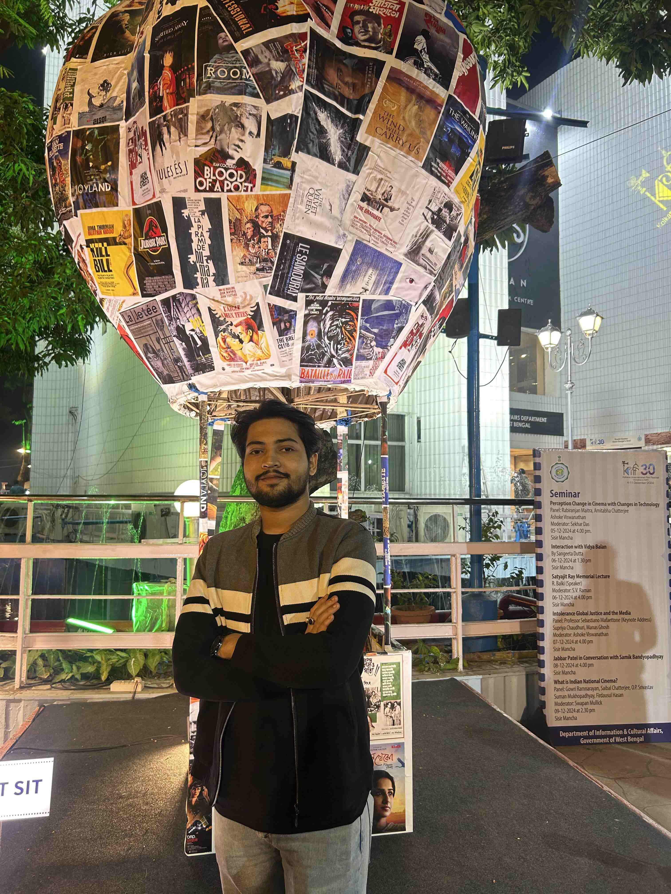

Web Developer | Photographer | CSE Student
I'm Ansu Nag, a passionate Computer Science Engineering student at Techno India University. I specialize in web interface development and software programming using C, C++, and Python. I am also an active photographer, leading Chitraka and contributing to visual storytelling through the Google Developer Student Clubs (GDSC).
B.Tech in Computer Science Engineering (2022–2026) | GPA: 7.78
Class 12 (2021) – 80%
Class 10 (2019) – 81%
Email: ansunag04@gmail.com
Phone: +91-9153241481
LinkedIn: linkedin.com/in/ansu-nag
Address: Mollachak, Samraipur, Paschim Medinipur - 721301